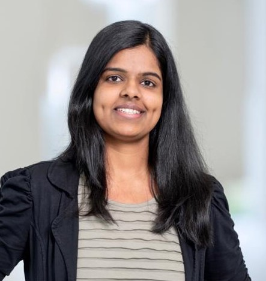

AI Research Scientist
I am an AI researcher and GenAI Tech Lead with 8+ years of experience across industrial and academic research, currently working at AstraZeneca in Cambridge (UK). My work centers on large language models, multimodal AI, and generative methods, with a focus on building reliable and deployable AI systems for scientific and clinical use, including collaborations with Prof. Mihaela van der Schaar, Prof. Pasquale Minervini (University of Edinburgh), and Prof. Yulan He (King's College London).(
I hold a PhD in machine learning, with research contributions in generative modeling and representation learning, and have published in leading venues including NeurIPS, ICML, ICLR, and ICCV. My background combines foundational ML research with applied work in industry, bridging methodological development and real-world deployment.
More recently, I have been leading technical work on agentic AI systems, including multi-agent reasoning and long-horizon workflows, with the aim of integrating LLM-based agents into complex scientific pipelines in a robust and responsible manner.
I will be speaking at GenAI London 2025 on “Agentic AI for Science: From Discovery to Design,” sharing practical insights from applying Genai/Agentic AI approaches in scientific R&D.
Our collaborative work with King’s College London (KCL) was featured among the top 3 daily papers on Hugging Face.
Excited to share that "Decore: Decoding by Contrasting Retrieval Heads to Mitigate Hallucinations" will be presented at EMNLP 2025.
Our work on "Balancing Act: Diversity and Consistency in Large Language Model Ensembles" has been accepted at ICLR 2025!
Started leading the GenAI initiatives at AstraZeneca's Center for AI, focusing on LLM-based solutions for biopharma R&D.
Successfully defended my Ph.D. thesis on "Optimization of the Latent Space of Deep Generative Models" at Universität Siegen.
Our work "Trading off Image Quality for Robustness is not Necessary with Deterministic Autoencoders" accepted at NeurIPS.
"Shape Your Space: A Gaussian Mixture Regularization Approach to Deterministic Autoencoders" accepted at NeurIPS 2021.